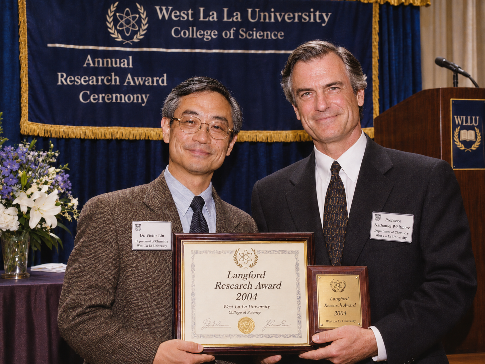

University research news · Autumn 2004
Langford Research Award
recognizes analytical collaboration
Professor Nathaniel Whitmore and Dr. Victor Lin have jointly received the 2004 Langford Research Award for their fluorescence-based method for detecting trace antibiotic residues in milk.

The award recognizes the sensitivity of their analytical method and the value of the collaboration behind it. Their joint paper, A Novel Fluorescence-Based Method for Rapid Detection of Trace Antibiotic Residues in Milk, describes europium-sensitized fluorescence for trace analysis.
Whitmore and Lin have described the work as the product of a long professional friendship and a shared commitment to reproducible laboratory methods.